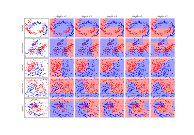

Note
Go to the end to download the full example code or to run this example in your browser via JupyterLite or Binder
Sample and Approximate Entropy: Comparison¶
In this example, we compare Approximate Emtropy with Sample Entropy
![x1~$\mathcal{Sin}$, x2~$\mathcal{N}(0,1)$, x3~$\mathcal{U}[-0.5,0.5]$](../../_images/sphx_glr_plot_it_sample_approx_entropy_comp_001.png)

0.23429427895105137 0.5921334630488566 0.6720444345470105
0.23462714901066314 2.1931512519485836 2.24992380933707
------------------------------------------------------------
Aproximate Entropy Sample Entropy
------------------------------------------------------------
x1: 0.23429427895105137 0.23462714901066314
x2: 0.5921334630488566 2.1931512519485836
x3: 0.6720444345470105 2.24992380933707
------------------------------------------------------------
------------------------------------------------------------
- time: Mean SD
------------------------------------------------------------
Approx Entropy: 0.9991630000000015 0.0009881435118448644
Sample Entropy: 0.044241200000000445 0.00035086658433166094
------------------------------------------------------------
4%|▓▓ |21\1|
9%|▓▓▓▓ |21\2|
14%|▓▓▓▓▓▓▓ |21\3|
19%|▓▓▓▓▓▓▓▓▓ |21\4|
23%|▓▓▓▓▓▓▓▓▓▓▓ |21\5|
28%|▓▓▓▓▓▓▓▓▓▓▓▓▓▓ |21\6|
33%|▓▓▓▓▓▓▓▓▓▓▓▓▓▓▓▓ |21\7|
38%|▓▓▓▓▓▓▓▓▓▓▓▓▓▓▓▓▓▓▓ |21\8|
42%|▓▓▓▓▓▓▓▓▓▓▓▓▓▓▓▓▓▓▓▓▓ |21\9|
47%|▓▓▓▓▓▓▓▓▓▓▓▓▓▓▓▓▓▓▓▓▓▓▓ |21\10|
52%|▓▓▓▓▓▓▓▓▓▓▓▓▓▓▓▓▓▓▓▓▓▓▓▓▓▓ |21\11|
57%|▓▓▓▓▓▓▓▓▓▓▓▓▓▓▓▓▓▓▓▓▓▓▓▓▓▓▓▓ |21\12|
61%|▓▓▓▓▓▓▓▓▓▓▓▓▓▓▓▓▓▓▓▓▓▓▓▓▓▓▓▓▓▓ |21\13|
66%|▓▓▓▓▓▓▓▓▓▓▓▓▓▓▓▓▓▓▓▓▓▓▓▓▓▓▓▓▓▓▓▓▓ |21\14|
71%|▓▓▓▓▓▓▓▓▓▓▓▓▓▓▓▓▓▓▓▓▓▓▓▓▓▓▓▓▓▓▓▓▓▓▓ |21\15|
76%|▓▓▓▓▓▓▓▓▓▓▓▓▓▓▓▓▓▓▓▓▓▓▓▓▓▓▓▓▓▓▓▓▓▓▓▓▓▓ |21\16|
80%|▓▓▓▓▓▓▓▓▓▓▓▓▓▓▓▓▓▓▓▓▓▓▓▓▓▓▓▓▓▓▓▓▓▓▓▓▓▓▓▓ |21\17|
85%|▓▓▓▓▓▓▓▓▓▓▓▓▓▓▓▓▓▓▓▓▓▓▓▓▓▓▓▓▓▓▓▓▓▓▓▓▓▓▓▓▓▓ |21\18|
90%|▓▓▓▓▓▓▓▓▓▓▓▓▓▓▓▓▓▓▓▓▓▓▓▓▓▓▓▓▓▓▓▓▓▓▓▓▓▓▓▓▓▓▓▓▓ |21\19|
95%|▓▓▓▓▓▓▓▓▓▓▓▓▓▓▓▓▓▓▓▓▓▓▓▓▓▓▓▓▓▓▓▓▓▓▓▓▓▓▓▓▓▓▓▓▓▓▓ |21\20|
100%|▓▓▓▓▓▓▓▓▓▓▓▓▓▓▓▓▓▓▓▓▓▓▓▓▓▓▓▓▓▓▓▓▓▓▓▓▓▓▓▓▓▓▓▓▓▓▓▓▓▓|21\21|
Done!
import numpy as np
import matplotlib.pyplot as plt
import spkit as sp
fs = 1000
t = np.arange(1000)/fs
x1 = np.cos(2*np.pi*10*t)+np.cos(2*np.pi*30*t)+np.cos(2*np.pi*20*t)
np.random.seed(1)
x2 = np.random.randn(1000)
x3 = np.random.rand(1000)-0.5
plt.figure(figsize=(12,3))
plt.subplot(131)
plt.plot(t,x1)
plt.title(r'x1~$\mathcal{Sin}$')
plt.subplot(132)
plt.plot(t,x2)
plt.title(r'x2~$\mathcal{N}(0,1)$')
plt.subplot(133)
plt.plot(t,x3)
plt.title(r'x3~$\mathcal{U}[-0.5,0.5]$')
plt.tight_layout()
plt.show()
Hx1_apx = sp.entropy_approx(x1,m=3,r=0.2*np.std(x1))
Hx2_apx = sp.entropy_approx(x2,m=3,r=0.2*np.std(x2))
Hx3_apx = sp.entropy_approx(x3,m=3,r=0.2*np.std(x3))
print(Hx1_apx, Hx2_apx, Hx3_apx)
Hx1_sae = sp.entropy_sample(x1,m=3,r=0.2*np.std(x1))
Hx2_sae = sp.entropy_sample(x2,m=3,r=0.2*np.std(x2))
Hx3_sae = sp.entropy_sample(x3,m=3,r=0.2*np.std(x3))
print(Hx1_sae, Hx2_sae, Hx3_sae)
print('--'*30)
print(' \t Aproximate Entropy \t Sample Entropy')
print('--'*30)
print(f'x1:\t {Hx1_apx} \t {Hx1_sae}')
print(f'x2:\t {Hx2_apx} \t {Hx2_sae}')
print(f'x3:\t {Hx3_apx} \t {Hx3_sae}')
print('--'*30)
import time
tt1 = []
for _ in range(5):
start = time.process_time()
sp.entropy_approx(x1,m=3,r=0.2*np.std(x1))
tt1.append(time.process_time() - start)
#print(time.process_time() - start)
tt2 = []
for _ in range(5):
start = time.process_time()
sp.entropy_sample(x1,m=3,r=0.2*np.std(x1))
tt2.append(time.process_time() - start)
#print(time.process_time() - start)
print('--'*30)
print('- time: \t Mean \t SD')
print('--'*30)
print(f'Approx Entropy:\t {np.mean(tt1)} \t {np.std(tt1)}')
print(f'Sample Entropy:\t {np.mean(tt2)} \t {np.std(tt2)}')
print('--'*30)
ApSmEn1 = []
ApSmEn2 = []
SD = []
Ps = np.arange(0,1+0.04,0.05)
for i,p in enumerate(Ps):
sp.utils.ProgBar_JL(i,len(Ps))
x41 = x1*(1-p) + p*x2
aprEn = sp.entropy_approx(x41,m=3,r=0.2*np.std(x41))
smEn = sp.entropy_sample(x41,m=3,r=0.2*np.std(x41))
ApSmEn1.append([p,aprEn,smEn])
x42 = x1*(1-p) + p*x3
aprEn = sp.entropy_approx(x42,m=3,r=0.2*np.std(x42))
smEn = sp.entropy_sample(x42,m=3,r=0.2*np.std(x42))
ApSmEn2.append([p,aprEn,smEn])
SD.append([p,0.2*np.std(x41),0.2*np.std(x42)])
ApSmEn1 = np.array(ApSmEn1)
ApSmEn2 = np.array(ApSmEn2)
SD = np.array(SD)
plt.figure(figsize=(11,5))
plt.subplot(121)
plt.plot(ApSmEn1[:,0],ApSmEn1[:,1:], label=['ApproxEn', 'SamEn'])
plt.xlim([0,1])
plt.xlabel('p')
plt.ylabel('SamEn/AproxEn')
plt.grid()
plt.title(r'$x = (1-p)x_1 + px_2$')
plt.legend()
plt.subplot(122)
plt.plot(ApSmEn2[:,0],ApSmEn2[:,1:], label=['ApproxEn', 'SamEn'])
plt.xlim([0,1])
plt.xlabel('p')
plt.legend()
plt.grid()
plt.title(r'$x = (1-p)x_1 + px_3$')
plt.tight_layout()
plt.show()
Total running time of the script: (0 minutes 53.147 seconds)
Related examples



Classification Trees: Depth & Decision boundaries
Classification Trees: Depth & Decision boundaries

EEG Computing Rhythmic Features - PhyAAt - Semanticity
EEG Computing Rhythmic Features - PhyAAt - Semanticity